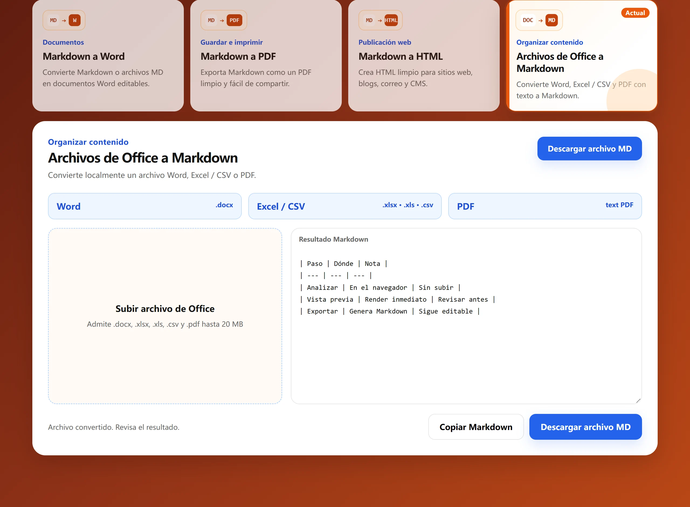

Guía de conversión de tablas
¿Cómo convertir Excel o CSV en Markdown?
Las tablas Markdown son más fáciles de editar y reutilizar que las capturas de pantalla para llevar datos de una hoja de cálculo a README, Notion, Obsidian, documentación o prompts de IA.

El método más rápido
- Abre la herramienta Excel / CSV a Markdown;
- Elige un archivo
.xlsx,.xlso.csv; - Selecciona la hoja cuando el libro contenga varias;
- Copia el Markdown o descarga un archivo
.md.
Preparar la hoja de cálculo
- Usa nombres de columna cortos y únicos en la primera fila;
- Quita filas y columnas vacías que solo sirven para separar visualmente;
- Evita las celdas combinadas, que las tablas Markdown no admiten;
- Confirma los resultados de las fórmulas antes de convertir;
- Divide las tablas extremadamente anchas en tablas más pequeñas y centradas.
¿Por qué se escapan las barras verticales?
Markdown usa | para separar celdas. Cuando una celda contiene su propia barra, el convertidor añade una barra invertida para que la estructura de la tabla siga siendo válida.
¿Cómo se arregla la codificación de un CSV?
Exporta la fuente como «CSV UTF-8» desde Excel u otra aplicación de hojas de cálculo. El archivo Markdown descargado también usa UTF-8.
¿Dónde se puede usar el resultado?
La tabla generada funciona bien en README de GitHub, documentación técnica, Notion, Obsidian, bases de conocimiento y flujos con IA. En tablas muy grandes, conserva solo las filas y columnas que hagan falta para la tarea.
Qué pasa con un libro de varias hojas
Solo se convierte una hoja cada vez. Tras la carga, aparece un selector cuando el libro tiene más de una hoja, y la herramienta muestra la primera por defecto. Cambia de hoja y vuelve a convertir para capturar las demás.
Tres cosas que hacen las hojas de cálculo y Markdown no
- Las celdas combinadas.Un rango combinado solo guarda su valor en la celda superior izquierda; las celdas cubiertas llegan vacías y los encabezados combinados suelen tener que repetirse a mano.
- El formato de celda.Colores, bordes y formatos numéricos son presentación, y las tablas Markdown no los trasladan.
- Las fórmulas.Solo se transfiere el valor calculado, nunca la fórmula.
Qué entradas funcionan y cuáles no
| Entrada | Admitida | Nota |
|---|---|---|
| .xlsx, .xls, .csv | Sí | Se convierte en tabla de barras |
| .docx | Sí | Párrafos y tablas se convierten en Markdown |
| PDF con texto seleccionable | Sí | Debe existir la capa de texto |
| PDF escaneado o solo imagen | No | Necesita OCR antes de convertir |
| .doc antiguo | No | Guárdalo primero como .docx |
Preguntas sobre la conversión de hojas de cálculo
¿Puedo convertir todas las hojas a la vez?
No. Se convierte una hoja por ejecución: elige otra en el selector y vuelve a convertir.
¿Por qué mi encabezado combinado queda incompleto?
Un rango combinado solo guarda su valor en la celda superior izquierda: las celdas cubiertas llegan vacías y el encabezado hay que repetirlo a mano.
¿Funciona con un PDF escaneado?
No directamente. Un PDF escaneado no tiene capa de texto: necesita OCR antes de la conversión.
Si la tabla se ve mal
- La primera fila se convirtió en encabezado en vez de un encabezado real.Las tablas Markdown siempre tratan la fila superior como encabezado: una hoja sin fila de encabezado produce una tabla engañosa.
- Aparecen columnas vacías de más.La hoja de origen aplica formato a celdas sin usar; elimina esas columnas y vuelve a subir el archivo.
- Los números son texto alineado a la izquierda.Así se almacenaba el valor. Convierte primero la columna a formato numérico en la hoja.